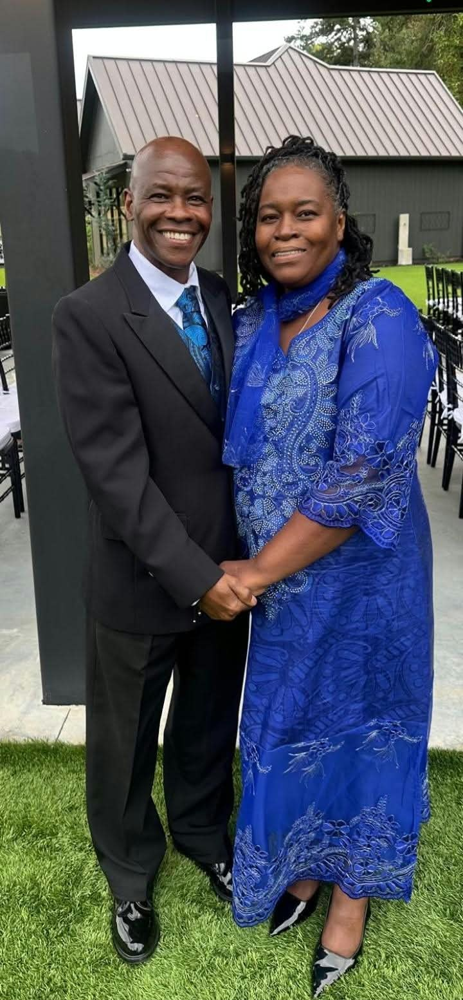

Nuestro liderazgo
Pastor Wilbert Michel y su esposa
Un ministerio de acompañamiento, amor y compromiso con la Iglesia

En la historia de nuestra congregación, Dios ha puesto personas que han sido instrumentos de bendición, orientación y fortaleza espiritual. Entre ellas, reconocemos con profundo agradecimiento al Pastor Wilbert Michel y a su amada esposa, quienes han demostrado un compromiso especial con nuestra iglesia y con el fortalecimiento de la obra de Dios en Chile.
Desde Estados Unidos, ambos han viajado hasta Chile para acompañar y apoyar a nuestra congregación, compartiendo su tiempo, sus enseñanzas y su experiencia ministerial. Su presencia ha representado un gesto significativo de amor fraternal, solidaridad cristiana y compromiso con el crecimiento de la Iglesia.
De manera particular, el Pastor Wilbert ha sido un apoyo espiritual importante en mi vida ministerial. Desde el momento en que asumí la responsabilidad pastoral, sus enseñanzas, sus consejos y su orientación espiritual me han ayudado a comprender con mayor profundidad el llamado de Dios y la responsabilidad de servir, guiar y acompañar al pueblo del Señor.
Junto a su esposa, ha mostrado que el ministerio cristiano también se construye mediante el acompañamiento, la entrega, la unidad y la disposición de caminar junto a otros siervos de Dios.
Como congregación, expresamos nuestro sincero agradecimiento por sus visitas, su dedicación y el apoyo que han brindado a nuestra comunidad. Su ejemplo nos recuerda que la obra de Dios trasciende las fronteras y que, cuando existe amor por la Iglesia, la distancia no impide servir, fortalecer y bendecir a nuestros hermanos.
Con gratitud y aprecio cristiano,
Pastor Faustin Nalus
Pastor principal
Primera Iglesia Bautista Haitiana Independiente en Chile